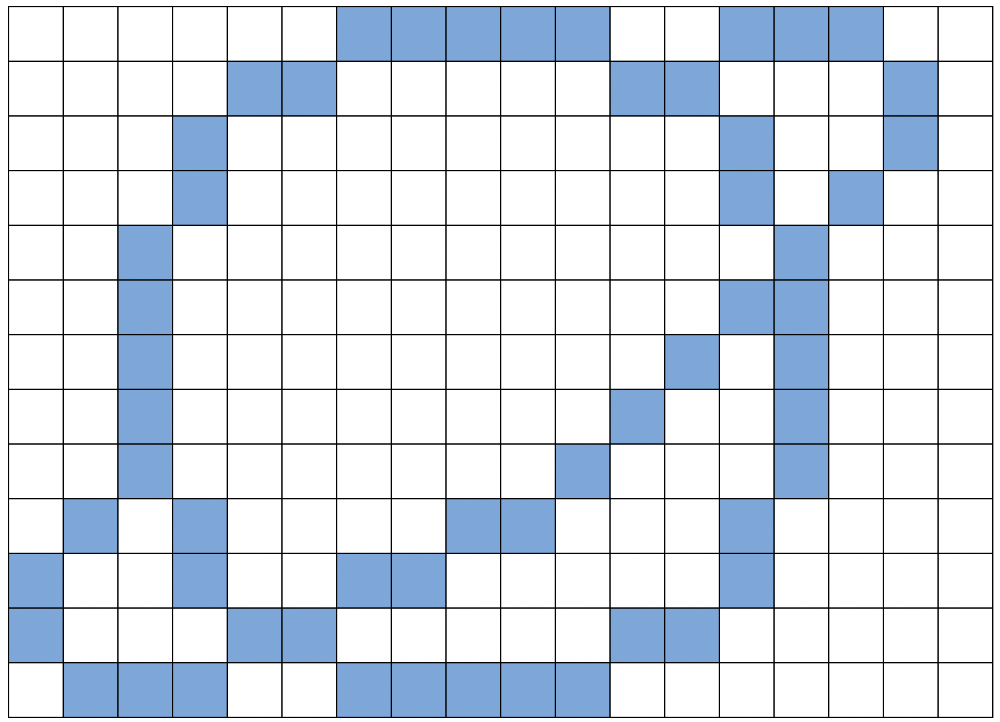
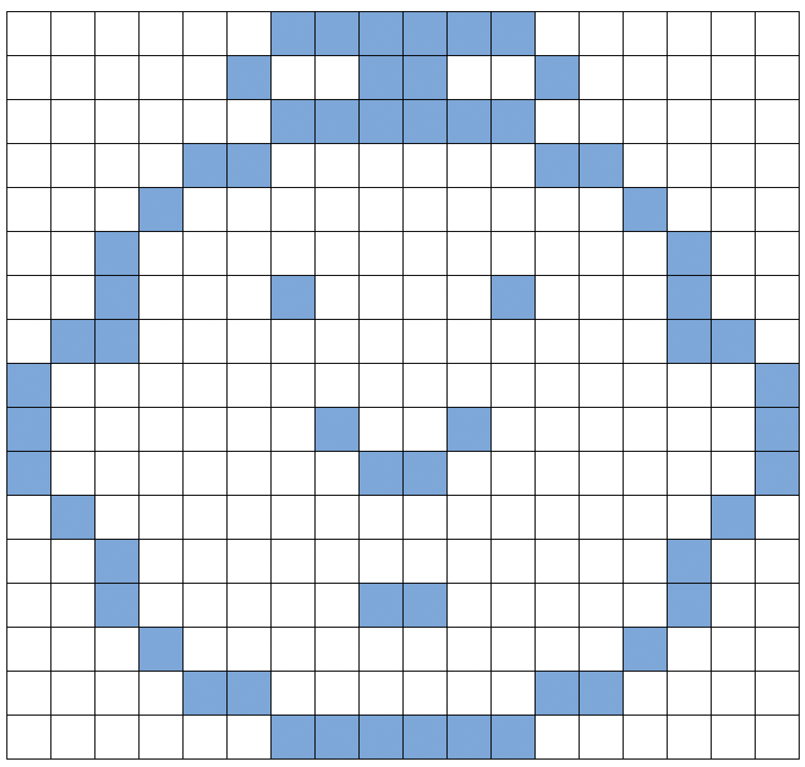
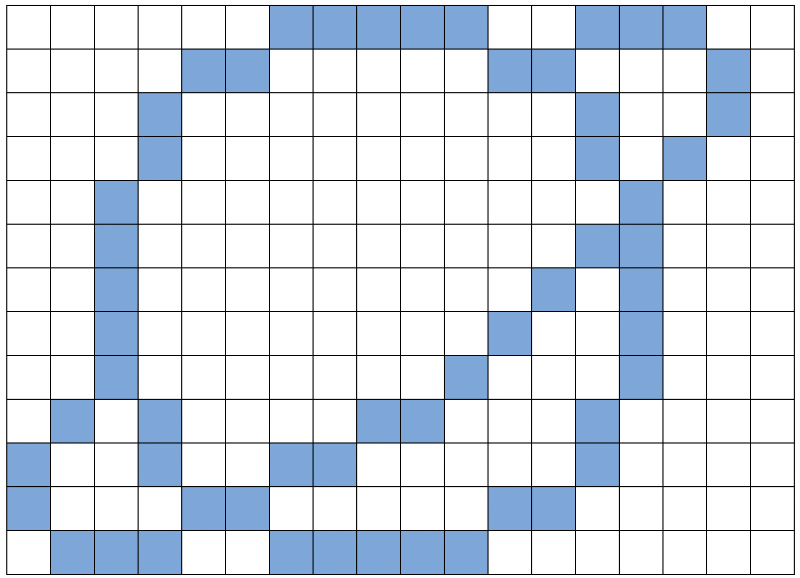
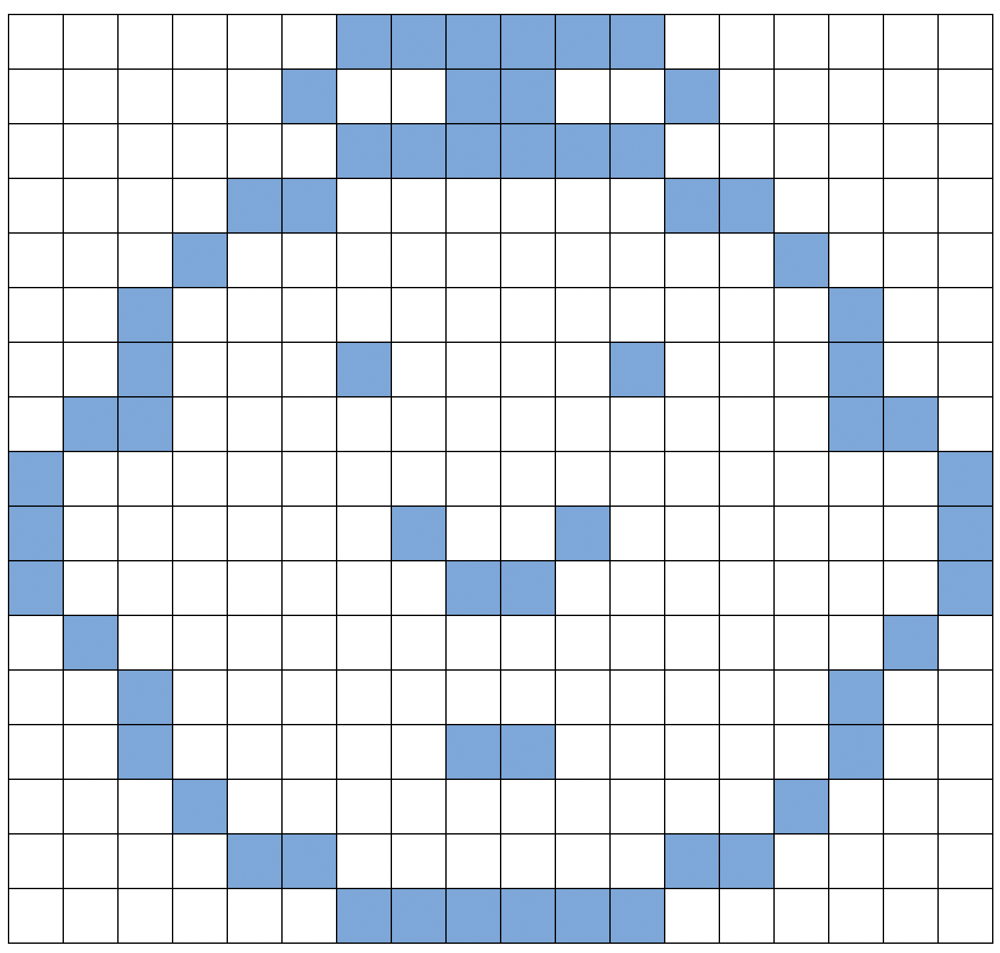

2 . 이미지 표현
2.3 숫자로 색깔 표현
2.3.1 들어가며
2.3.1.1 토의 질문
- 팩시밀리 기계(팩스, fax)는 무슨 일을 하나요?
- 컴퓨터가 어떤 상황에서 그림을 저장할 필요가 있나요? (그림을 그리는 프로그램, 그래픽 게임, 멀티미디어 시스템)
- 컴퓨터는 숫자만 사용할 수 있는데 어떻게 그림을 저장할까요?
(학습 활동을 위해서 아이들이 팩시밀리를 사용하여 메시지를 주고 받게 준비하는 것도 좋습니다.)
2.3.1.2 OHP 시트를 사용한 시연

컴퓨터 화면(computer screen)은 픽셀(pixels, picture elements)로 불리는 작은 점들의 격자로 나눠져 있다.
흑백 그림에서 각 픽셀은 검은색이거나 하얀색이 된다.
문자 “a”를 확대해서 픽셀을 살펴보자. 컴퓨터가 그림을 저장할 때, 필요한 모든 것은 어느 점이 검은색이고, 어느 점이 흰색인가하는 정보다.

위 그림은 문자 “a” 그림이 어떻게 숫자로 표현되는지를 보여준다. 첫 번째 줄은 하얀 픽셀 하나, 검은 픽셀 세 개, 시 하얀 픽셀 하나다. 그래서 첫 줄은 1,3,1로 표현된다.
첫 번째 숫자는 항상 하얀 픽셀과 관계된다. 만약 첫 번째 픽셀이 검정색이면, 첫번째 줄은 0으로 시작한다.
17 쪽의 연습문제에는 방금 전에 보여준 방법을 활용하여 아이들이 복호화(decode)할 그림이 있습니다.
2.4 학습 교구: 숫자로 색깔 표현하기
컴퓨터 화면에 보이는 “a” 문자. 문자 이미지”a”를 픽셀이 보이도록 확대한 뷰(view)

공백 격자 그리드(grid) (교수 목적 제공)
2.6 활동: 자신만의 그림을 그리자
이제 숫자가 그림을 어떻게 표현하는지를 배웠습니다. 친구를 위해서 여러분이 직접 그림을 만들어 보세요. 위쪽 격자 그리드에 그림을 그리고, 다 그렸으면 아래쪽 격자 그리드 옆에 숫자로 코드를 적으세요. 점선을 따라서 자르고, 아래쪽 격자 그리드를 친구가 색칠하도록 전달해 주세요. (노트: 원치 않으면 전체 격자 그리드를 모두 사용하지 않아도 됩니다. 그림이 격자 전체를 차지하지 않는다면, 아래 몇몇 줄을 공백 상태로 두세요.)

자신의 그림을 그려보세요
- 아래를 절취하세요
자신의 그림을 그려보세요
2.7 활동: 자신만의 그림을 그리자 (심화문제)
심화문제: 채색된 이미지를 표현하려면, 색깔을 표현하는 숫자를 사용한다. (예, 0 은 검정, 1 은 빨강, 2 는 녹색 등) 두 숫자로 픽셀을 표시한다: 첫 번째 숫자는 전에 표기한 것과 같고 두 번째 숫자가 색깔을 표시한다. 친구를 위해 색깔 그림을 만들어 보세요. 각 숫자가 무슨 색깔을 의미하는지를 사전에 친구에게 알려주는 것을 잊지 마세요.
색상이 있는 자신만의 그림을 그려보세요
- 아래를 절취하세요
색상이 있는 자신만의 그림을 그려보세요
2.8 컴퓨터 과학 핵심 개념
팩시밀리 기계는 흑백 종이를 약 1000 × 2000 픽셀로 스캔해서 모뎀을 사용하여 다른 팩시밀리 기계에 보내는 정말 단순한 컴퓨터다. 다른 팩시밀리 기계는 전송 받은 픽셀을 종이에 출력한다. 종종, 팩스 이미지가 넓은 흰 공백(예, 한계(margin)) 혹은 검은 픽셀 (예, 가로줄)을 가지고 있다. 색깔 있는 그림은 훨씬 더 많은 중복이 있다. 이런 이미지를 저장하려고 필요한 많은 저장공간을 절약하기 위해서, 프로그래머는 다양한 압축 기술을 사용한다. 여기서 사용되는 방법은 “런 길이 부호화(run-length coding)”로 불리고, 이미지를 압축하는 효과적인 방법이다. 이미지를 압축하지 않으면, 사진을 보내는데 오랜 시간이 걸리고 추가로 더 많은 저장공간이 필요하다. 따라서, 웹페이지에 사진을 게시하거나 팩스를 보내는 것이 가능하지 않을 수 있다. 예를 들어, 팩스 이미지는 일반적으로 원본 크기의 7 분의 1 로 압축된다. 압축 없이 전송하는데는 7 배 많은 시간이 걸린다.
사진과 그림은 다양한 압축기법을 사용하여 원본의 10분의 1, 혹은 100분의 1의 크기로 압축된다. 이렇게 압축해서 더 많은 이미지를 동일한 디스크에 저장할 수 있고, 인터넷을 통해서 사진과 그림을 보는데 짧은 시간내에 볼 수 있다는 의미가 된다.
프로그래머는 적절한 압축 기법을 선택해서 이미지를 전송할 수 있다.

핵심 개념
 
